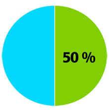
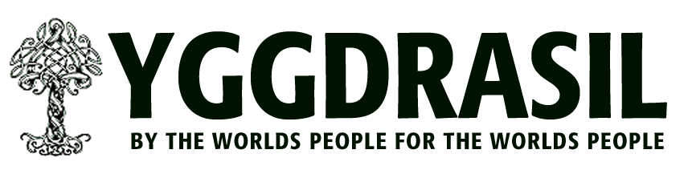
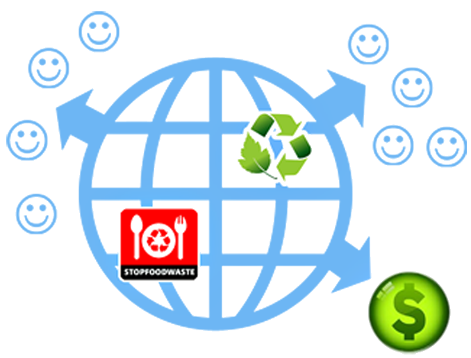

        <div data-role="view" id="qa-tabstrip" data-title=" Crowdfunding"  style="background-color: #f3f3f3;">
            <div data-role="content" align="center" text-align="center">
                <ul data-role="listview" data-inset="true" data-theme="b">
                    <li>
                        <span class="basictext">
                            <h1>
                                <label for="�qatext�" data-localize="qatext">
                                    Your activity will benefit others
                                </label>
                            </h1> 
                            <label
                                for="�qatext�" data-localize="qatext1">
                                We have created a mobile platform that can give any individual, company, society
                                a fresh look at recycling. But in order to becoming a success it requires users.
                                Active supporters will mean sponsors and thereby increased value for everyone -
                                but not only to "recycleworld". We have chosen to donate 50% of our profit.
                            </label>
                        </span>
                                
                        <div>
                            
                        </div>
                        <span class="basictext">
                            <label for="�qatext�" data-localize="qatext2">
                                YGGDRASIL foundation distributes the 50% of profit what may come from recycleworld
                                app and there supporters. A supporter pays a monthly fee and 50% of the profit is
                                placed in the YGGDRASIL foundation. You pay for a service, but at the same time
                                crowdfunds for environment. So many small amounts being collected into one big funding.<br>
                                <br>
                                Every year this collected profit is being donated to different organisations in
                                the three following categories:
                            </label><br> <br> 
                            <label for="�qatext�" data-localize="qatext3">
                                - humanitarion<br>
                                - environmental<br>
                                - green innovation<br>
                                <br>
                                An organisation can only get a donation every second year. So we intend to do as
                                much good as we can with the profit created. This foundation was created by the
                                worlds people for the worlds people. When a year has ended - its the recycleworld
                                users that decides how the money should be divided out to different organisations.
                                So the more people that join in, the more good we can do for others. We thank you
                                for every helping hand we get...<br>
                                
                            </label>
                        </span>
                    </li>
                </ul><br><br>
            </div>
        
        </div>